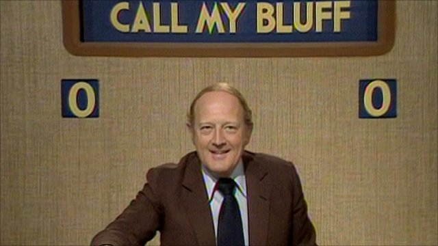

Saturday, August the 13th, 2011
back to: title, date or indexes
Robert Robinson, 1927–2011

“He genuinely placed too much importance on the value of words as meaningful and disinterested tools of thought and wisdom to accept money for delivering even a sincere favourable opinion of sausages or toilet paper.”—Obituary here.